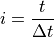

Cutting traces¶
| Authors: | Jose Guzman |
|---|---|
| Updated: | 28 June, 2018 |
As described in The Python shell chapter of the Stimfit manual, a very often requested feature of Stimfit is to cut an original trace to show it in a presentation or publication. This feature, however, has been only integrated into the stf module, and not in the Stimfit main menubar. With this, Stimfit preserves its user interface as clear and user-friendly as possible.
We can use the built-in stf function stf.new_window() to show a new stf window with the current trace within an interval. For example,
>>> stf.new_window(stf.get_trace()[1600:3200])
presents a new window with the current trace between the sampling points 1600 and 3200. Remember that stf.new_window() takes a 1D-NumPy array as argument. To cut the trace within the desired limits, we have to slice it before with
>>> stf.get_trace()[1600:3200]
Note that the index  of a sampling point and the corresponding time
of a sampling point and the corresponding time  , measured from the start of the trace, are related as follows:
, measured from the start of the trace, are related as follows:

where the sampling interval  can be obtained with the following function:
can be obtained with the following function:
>>> dt = stf.get_sampling_interval()
Then, if our sampling interval (dt) is 0.05 ms, the points selected correspond to 80 and 160 ms respectively. Alternatively, one could have thought about this command:
>>> stf.get_trace()[80/dt:160/dt]
However this will not work. Slicing requires integers as argument and not floats (both 80/dt and 160/dt are floats). So we have to transform this ratios to integers with int(80/dt) and int(160/dt). Besides that, the float precision of python will play against us here. If we make dt = stf.get_sampling_interval and get a value dt = 0.05000000074505806 (rather than 0.05) then the corresponding values for 80/dt will be 1599.99. The function int() will take only the value without decimal and will take erroneously 1599 in stead of 1600. We have to use the python function round(float,ndigits) to round up this value.
>>> pstart = int( round(80/dt) ) # now round(80/dt) = 1600.0 instead of 1599.99
>>> pend = int( round(160/dt) ) # now round(160/dt) = 3200.0 instead of 3199.99
>>> stf.get_trace()[pstart:pend] # now the slicing withing the integer values
Note
You can round up dt with round(dt,ndigits) or the ratio 80/dt with round(80/dt,ndigits) (with ndigits=2 for example). In any case, do it always before int() takes the integer part of the real number.
The cutting traces function¶
In the chapter devoted to Python (The Python shell) in Stimfit manual you can find a function to cut a given trace within the sampling points. This function is slightly different. As described above, we would take times and not sampling points as argument. After that, we will take list of traces and not a single trace to cut. This function will use stf.new_window_list() which takes a list of 1D-Numpy arrays to present a new stf window.
# load main Stimfit module
import stf
def cut_sweeps(start, delta, sequence=None):
"""
Cuts a sequence of traces and present
them in a new window.
Arguments:
start -- starting point (in ms) to cut.
delta -- time interval (in ms) to cut
sequence -- list of indices to be cut. If None, every trace in the
channel will be cut.
Returns:
A new window with the traced cut.
Examples:
cut_sweeps(200,300) cut the traces between t=200 ms and t=500 ms within the whole channel.
cut_sweeps(200,300,range(30,60)) the same as above, but only between traces 30 and 60.
cut_sweeps(200,300,stf.get_selected_indices()) cut between 200 ms and 500 ms
only in the selected traces.
"""
# select every trace in the channel if not selection is given in sequence
if sequence is None:
sequence = range(stf.get_size_channel())
# transform time into sampling points
dt = stf.get_sampling_interval()
pstart = int( round(start/dt) )
pdelta = int( round(delta/dt) )
# creates a destination python list
dlist = [ stf.get_trace(i)[pstart:(pstart+pdelta)] for i in sequence ]
return stf.new_window_list(dlist)
Code commented¶
We provide some flexibility with the argument sequence. If we do not give any argument to sequence, we will select every trace in the channel with the function stf.get_size_channel(), which returns the number of traces in the channel.
if sequence is None:
sequence = range(stf.get_size_channel())
Finally we add to the list the 1D-NumPy arrays whose index is described in the sequence.
dlist = [ stf.get_trace(i)[pstart:(pstart+pdelta)] for i in sequence ]
and slice the 1D-NumPy array as described above.
Usage¶
In any case, a new stf window with the traces cut will appear
>>> spells.cut_sweeps(200,300)
will create a new window with all the traces of the channel cut between t=200 ms and t=500 ms.
>>> spells.cut_sweeps(200,300,range(30,60))
will create a new window with the same selection, but only between the traces 30 and 60.
>>> spells.cut_sweeps(200,300,stf.get_selected_indices())
will create a new window with the cut traces only if they were previously selected.